Text properties
When a text object is selected the Appearance panel displays settings for several character and paragraph properties.
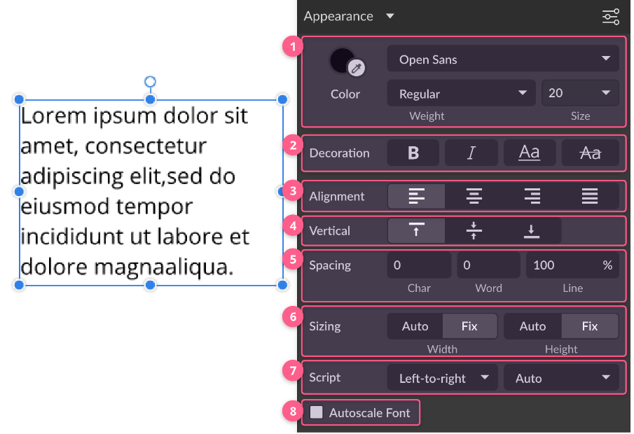
Basic text properties (1)

Color (1)
You can choose a solid color for selected characters or the whole text box. Every character in the text box can have a different color.
Font family (2)
You can choose a typeface for selected text. You can have multiple fonts inside one text box. There are 3 font buckets:
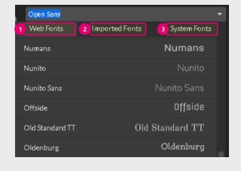
- Web Fonts(1) tab includes all of the fonts contained in the Google font library.
- Imported Fonts(2) tab includes all custom fonts imported manually inside Gravit Designer. To import fonts, go to and point to the font files on your computer. Compatible font formats are TTF, OTF, TTC, and DFont.
- System Fonts(3) tab shows all fonts installed on your OS.
This option is only available in the desktop version.
Weight and style (3)
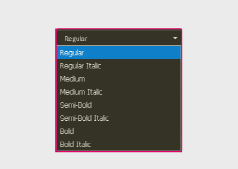
Displays all weight and styles available for the font (light, regular, bold, italic, and more).
Font Size (4)
You can select preset sizes from the drop-down list or type in a size. The font size is displayed in points (pt) for all units except pixels, where the font size is displayed in pixels.
Decoration (2)
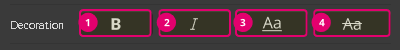
(1) Bold: only active when the font has a bold weight
(2) Italic: only active when the font has an italic style
(3) Underline: draws a line at the bottom of the characters
(4) Strikethrough: draws a line in the middle of the characters
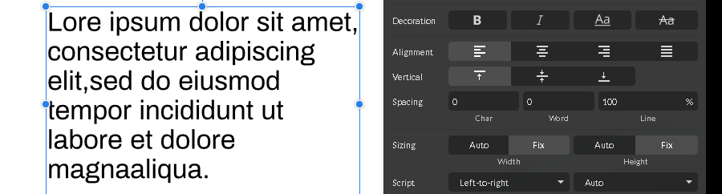
Horizontal alignment(3)
This section controls the horizontal position of the text in the text box.
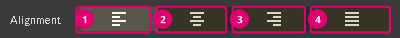
- Left(1) is a default alignment option in Gravit Designer. The text is aligned to the left side of the text box.
- Select Center(2) if you want to position text in the center of the text box.
- Select Right(3) if you want text aligned to the right of the text box.
- Fully Justified(4) if you want words spaced to fill the text box.
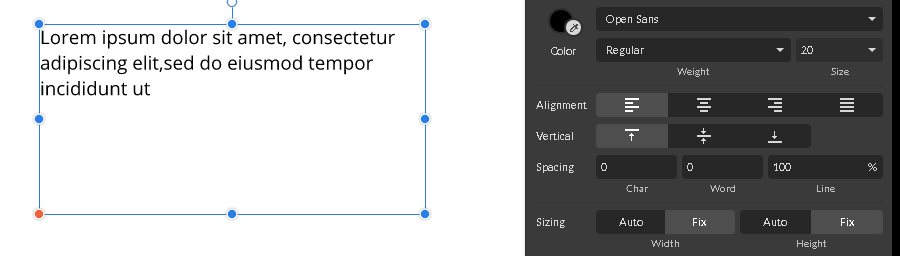
Vertical alignment(4)
This section controls the horizontal position of the text in the textbox.
- Select the Top(1) to position text at the top of the text box. This is the default setting.
- Select the Middle(2) to position a block of text in the vertical center of the text box.
- Select the Bottom(3) to position text at the bottom of the text box.
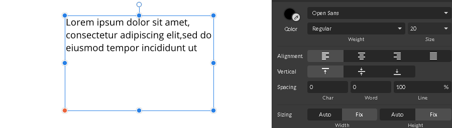
Spacing text (5)
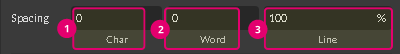
Adjust the value in the Char text field(1) to kern or track letters in the words (kerning and tracking is a process of adjusting the space between two or more glyphs). To learn more about tracking and kerning, see Art of Kerning in the Gravit Designer Medium blog.
Type numbers in the Word text field(2) to adjust the space between two or more words in the sentence.
Adjust the value in the Line text field(3) to change the leading or line spacing in Gravit Designer. The default value is 100%. You can type a value or use or to increase or decrease the distance between the lines in the block of text. Also, you can switch to pixel values by clicking on % sign.
Sizing (6)
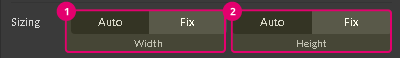
The Sizing section defines how textual content fits the text box. Changing the width to Auto instead of Fix resizes the text box to fit the text.
Select Auto for Width(1) if you want the textbox width to fit the width of the content inside.
Select Fix for Width(1) if you want the content to wrap in the fixed-width text box.
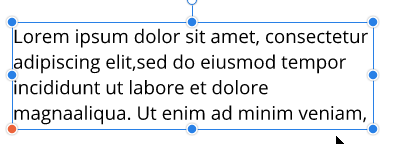
Select Auto for Height(2) if you want the text box width to fit the width of the content inside.
Select Fix for Height(2) if you want the content to wrap in the fixed-height text box.
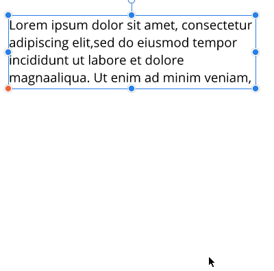
Text direction and RTL support (7)
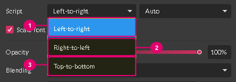
Open to the Script panel(7) to set a writing direction or orientation:
- Left-to-Right(1) (default)
- Right-to-Left(2)
- Top-to-Bottom(3) sets the text vertically.
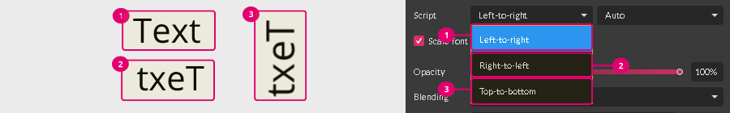
Text script
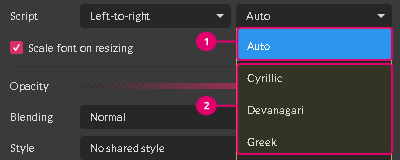
By default, the Text Script drop-down in the Script section is set to Auto (1), where Gravit Designer substitutes the best available script.
You can choose it yourself from the available options (2).
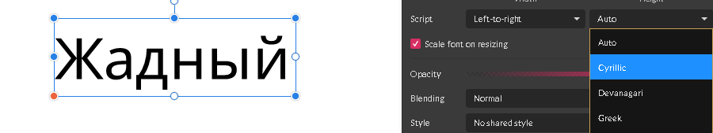
Autoscale font (8)
When the Autoscale Font check box in the text properties panel is checked, text is resized like any other vector object. Note: Autoscale Font was called Scale Font on resizing in older versions of Gravit Designer.